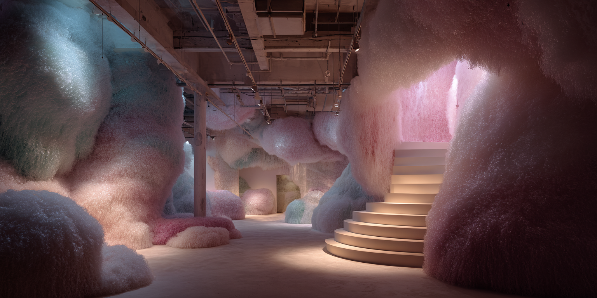
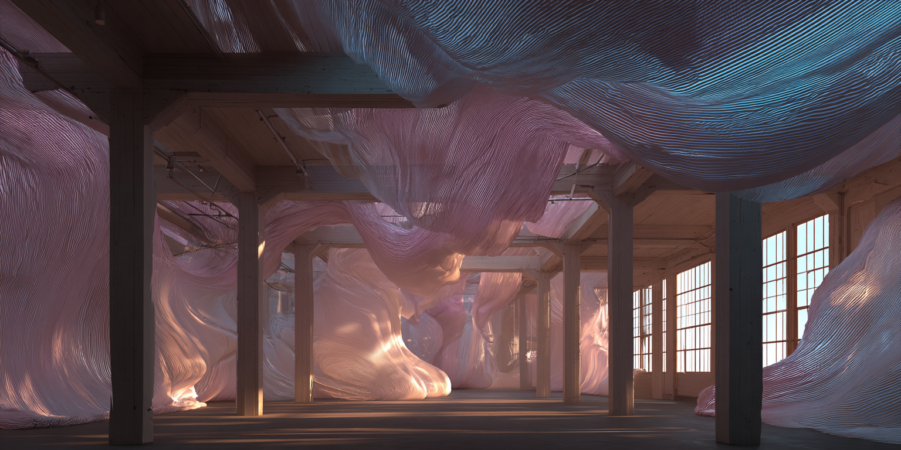

← Back

Fuzzy — image

Fabric — image
 Mesh — image
Mesh — image
 Wooden Ceiling — image
Transition — Fuzzy → Fabric
Transition — Fuzzy → Mesh
Transition — Fabric → Mesh
Transition — Fabric → Wooden Ceiling
Transition — Mesh → Fabric
Transition — Mesh → Wooden Ceiling
Transition — Wooden Ceiling → Fabric
Transition — Wooden Ceiling → Mesh
Wooden Ceiling — image
Transition — Fuzzy → Fabric
Transition — Fuzzy → Mesh
Transition — Fabric → Mesh
Transition — Fabric → Wooden Ceiling
Transition — Mesh → Fabric
Transition — Mesh → Wooden Ceiling
Transition — Wooden Ceiling → Fabric
Transition — Wooden Ceiling → Mesh